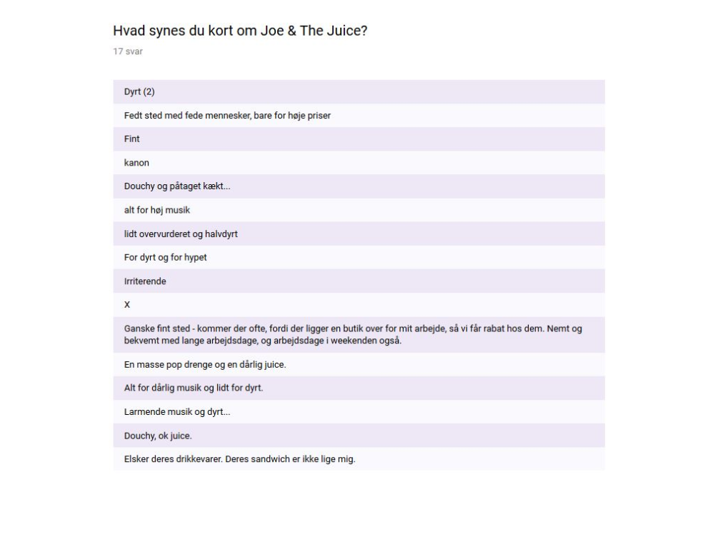

Størstedelen er københavnere, og nogle vælger ‘andeby’ nok fordi de ikke vil videregive deres bopæl eller de gør grin.
Størstedelen synes at det er for dyrt, og 2 personer synes det er lige tilpas.

Mange vil have digitale klippe/stempelkort og optjene rabatpoint ved køb af deres vare.
Mange vil ikke og mange vil. Men størstedelen på 52,9% vil stadig ikke.
Mange synes at det meget dyrt, ‘douchy’ og irriteret over for musikken.
Der var dog én som nævner at han/hun kommer forbi ofte pga. placeringen tæt på arbejdet, personen nævner også at de får rabat.
Konklusion
Målgruppen er generelt unge fra 18 til 25 år, som tager sjældent til Joe & The Juice som ikke har brugt Loyalty appen før, men går efter at tjene rabat for køb og bruge digital stempel/klippekort. Mange af dem vil downloade appen og omkring halvdelen vil gå der oftere til Joe & The Juice efter de fandt ud af at der vil være rabat.